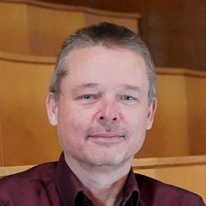

| Address: | University of Copenhagen |
| Department of Computer Science | |
| Universitetsparken 1 | |
| 2100 København Ø | |
| Office: | 3.2.20 |
| Email: | sporring@di.ku.dk |
| Phone: | (+45) 2448 2894 |
| Skype: | jon_sporring |
| Github: | github.com/sporring |
| ORCID: | 0000-0003-1261-6702 |
| ResearcherID: | L-4499-2016 |
| Semantic Scholar: | 1773176 |
| DBLP: | 33/5273 |
| Google Scholar: | COP1HUwAAAAJ |